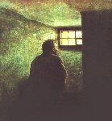

Themes/Symbols
Themes/Symbols

Note: This list by no means represents all the themes/symbols in this text. For those interested in reading a critical exploration of a different set of themes should be referred to the introduction to The Adolescent written by Richard Pevear.
- Russia
Dostoevsky was a Slavophile that spent much of his life in Europe. The Adolescent contains several sketches of attitudes that Russians have towards themselves and their nation. Kraft, the prince and Versilov deliver some of the most complete expressions of Russianness in Dostoevsky’s novels.
“Mr. Kraft…has arrived at a rather extraordinary conclusion, which has surprised everybody. He has deduced that the Russian people are second-rate people…whose fates is to serve merely as material for a more noble race, and not to have its own independent role in the destinies of mankind. In view of this possibly correct deduction of his, Mr. Kraft has come to the conclusion that any further activity of any Russian man should be paralyzed by this idea, so to speak, that everyone should drop their hands…” (51)
At a social gathering Arkady overhears political discussion driven by the ideas of the atheist Kraft. Kraft apparently takes his own advice and stops all future activity by ending his own life.
“You and I have been overtaken by the same Russian fate, Arkady Makarovich: you don’t know what to do, and I don’t know what to do. Once a Russian man gets slightly out of the ordinary rut that custom lays down for him- he immediately doesn’t know what to do. In the rut, everything is clear…” (302).
Here the prince is talking with Arkady describing perhaps a downstream event of Kraft’s theory or else some other deeper devotion to tradition.
“For a Russian, Europe is as precious as Russia; for him, every stone in her is dear and beloved. Europe was just as much our fatherland as Russia. Oh, even more! It’s impossible to love Russia more than I do, but I never reproached myself for the fact that Venice, Rome, Paris, the treasures of their science and art, their whole history- are dearer to me than Russia. Oh, Russians cherish those old foreign stones, those wonders of God’s old world, those fragments of holy wonders; and they’re even dearer to us than to them! They have other thoughts and other feelings now, and they’ve ceased to cherish the old stones…Russia has lived decidedly not for herself, but for Europe alone!” (469).
Versilov addresses Russia’s admiration for Europe’s cast off notions, her “old stones.” He dreams of a European Utopia, a Christless socialism. Dostoevsky doesn’t approve of Versilov’s ideas in real life or in the novel. Versilov is a divided, irrational character, brilliant but not in control of the full truth until the end of the novel. He learns this truth from Makar, the wise, ultra religious man who has spent his life wandering Russia.
- Youth
This novel is perhaps Dostoevsky’s most deliberate and complete treatment of youth. All of his main protagonists are youth, men between childhood and adulthood, that crucial period of discovering one’s identity, still naïve and idealistic coming to face the great questions of life with honesty and fresh eyes. The Adolescent is unique in that the narrator is a youth himself. Our view into his world is colored by his youthful perceptions and memories. Arkady is one of the most endearing, bumbling and vulnerable variations on Dostoevsky’s theme. Arkady is well intentioned but led astray by insuppressible pride, impulsive behavior and weak character. In the pursuit of his idea he undertakes a rather ridiculous plan to move out of his house and into a “closet” where he fails to follow any of his precepts- he spends money indiscriminately, gambles, borrows and greatly relishes the visits of Versilov, a man who he once despised and longed to get away from. He dreams of power, money and of his idea of running away from home and becoming truly independent from his parents. But what he really wants so painfully is a relationship with his father. He comes to discover his awakening sexual desire and daydreams of serious love interests. However he is socially awkward, often saying the wrong thing at the wrong time, not knowing when to keep his mouth closed.
“It has just occurred to me that if I had at least one reader, he would probably burst out laughing at me, as at a most ridiculous adolescent who, having preserved his stupid innocence, barges with his reasonings and solutions into things he doesn’t understand. Yes, indeed, I still don’t understand, though I confess it not at all out of pride, because I know how stupid this inexperience at the age of twenty can be; only I will tell the gentleman that he himself does not understand, and I will prove it to him” (11).Here we get a taste of Arkady’s complex self-deprecating narrative. He suspects maybe that he doesn’t know anything, but still feels like maybe he knows everything.“They will preserve at least certain faithful features by which to guess what might have been hidden in the soul of some adolescent of that troubled time- a not entirely-insignificant knowledge, for the generations are made up of adolescents…” (564).
It has been proposed that in some ways Dostoevsky never grew out of his own adolescence, never finding resolution to his identity of answers to his questions. This passage speaks beautifully of the hope that Dostoevsky puts into the future shaped by the youth of today.
- Fathers and Sons
This theme is on almost every page of the novel. This book graphically raises the questions of what makes a father. Versilov is Arkady’s biological and illegitimate father. Makar is his legal father, married to his mother. Functionally Arkady had no father for his formative years. Lambert mocks him when Katerina insults him, saying, “she knows you have no father and can be insulted” (443). He was sent to boarding school, burdened with his convoluted origin in a culture that identified each individual by his name and his father’s. Everyone knows that Versilov is Arkady’s father, yet Arkady is named as if Makar were. Versilov and Arkady’s turbulent connection is the main tension of the novel. They both fall in love with Katerina Nikolaevna, they argue about ideas. Makar reenters at the end of the novel, a transient non-intrusive parent.
Arkady relationship with Versilov’s can best be described as “love-hate”. Versilov is a more complicated character, one whose thoughts readers are not privy to, however, he is at least more consistent than Arkday in how he expresses himself and acts towards him. On the first visit Versilov makes to Arkady since he’s moved out, he begins a tirade of moralizing and philosophizing. A close reading of this text draws out the essence of their relationship while drawing in many larger themes.
Versilov’s character development before this interaction is limited and occurs mostly to Arkday’s venting. This is the first time Versilov speaks for himself. The advice he gives, even when now out rightly of a religious nature is nearly all drawn from the Bible. He begins saying that Arkady should read the ten commandments. Arkday responds, “‘And besides, what am I alone to do with your commandments?’ ‘But fulfill them, despite all your questions and doubts, you’ll be a great man.’ ‘Unknown to anyone.’ ‘Nothing is secret, that shall not be made manifest.’ ” (211). Here is both a call to a moral absolute and the promise of an eschatological reward. This could be advice from a priest, not a father of illegitimate children with questionable morality.
Versilov later says, “Well, to turn stones into bread- there’s a great thought” (211). This is a strange reference, a miracle that never occurs in the gospels, but is actually invented by the devil to tempt Christ who had been fasting in the desert for forty days (Matthew 4:3). Versilov marvels at the miracle power play that can amaze people and assert domination over the physical world (think The Grand Inquisitor.)
Versilov says, “Silence is always more beautiful, and a silent person is always more beautiful than one who talks” (212). Russian Orthodox mysticism has a strong devotion to inner silence. It is in the beauty of this silence that men are transformed into Christ through some mystical transformation. Silence can be escape from the world, but also can be a power issue. Withholding information, being serene and silent can be associated with people who are the most dangerous, such as the mafia. There is a sheer terror associated with silence that is more penetrating than screaming or argument. There is a power is the absence of words.
He gives Arkday a very simple imperative that is somewhat paradoxical. “You must believe in God, my dear” (213). He doesn’t seem very concerned when Arkady says he doesn’t. He ends with, “Endure evil from them, not getting angry with them if possible…To love one’s neighbor and not despise him is impossible” (213). This is a strange rendering of the words of Christ, “Love your enemies” (Matthew 5:44) and “Love your neighbor as yourself” (Matthew 5:43). The action is there, but the moral imperative is gone. It is revelation tempered with cynicism.
Does Versilov follow his own advice? Apparently not, taking into account his relationship with Arkday’s mother. Does he expect Arkday to? In what spirit does he tell this to Arkday, to shame him, to mock him, to help him, to save him? What is the essence of his position? A “virtue without Christ” (212). Is this tenable? His argumentation seems to break down. If Arkday is to follow the teachings of the Bible, yet they are impossible to follow and God does not exist, it seems he’s in a bit of a bind. Ultimately the goal of Versilov’s advice is not to be a good person, but to be a great person, a great man, not depending on Christ, but on self.
“Of course, a father had suddenly appeared, whom I had never had before. This thought intoxicated me both while I was packing in Moscow and on the train. The fact of a father was nothing, and I disliked tender feelings, but this man did not want to know me and humiliated me, while all those years I had dreamed long and hard of him…Each of my dreams since childhood had echoed with him, had hovered around him, had in the final result come down to him. I don’t know whether I hated or love him, but he filled all my reckoning in life, with himself- and that happened on its own, it went together with my growing up” (17-18).
Arkady initially felt hurt by Versilov’s attitude towards him. He felt resentful and entitled yet strongly attracted to the source of his pain. Versilov’s personality dominates his world.
Sometimes people confuse Arkady’s name and address him as if he were legally Versilov’s son. Certain characters always make references to Arkady’s father, some say Versilov, others Makar.
“‘Yes, papa,’ Liza replied with an affectionate look. She called him father; I wouldn’t submit to that for anything” (102).
Arkady has his coping strategies to protect himself from his father’s rejection. He holds back certain outward signs of affection until he can be sure of his father’s response.
“Christ is our Father” (263).
This Biblical reference cannot be ignored. In the discussions of fathers and sons Dostoevsky clearly has some larger themes in mind.
“You see, my darling, my nice papa- you’ll let me call you papa…” (268).
Here Arkady is free to open up to Versilov. He finds his most real identity when he can be himself with his father.
- Women
As in other Dostoevsky novels, women play many different roles from temptress to nurturer. The Adolescent contains some of Dostoevsky’s most human women such as Tatyana Pavlovna and Liza, both much more than a rough caricatures. Katerina Nikolaevna is a sexually powerful woman, capable of seducing both father and son.
“Russian women lose their looks quickly, their beauty is fleeting, and in truth that’s not only owing to the ethnographic properties of the type, but also to the fact that they’re capable of loving unreservedly. A Russian woman gives everything at once if she loves- moment and destiny, present and future. They don’t know how to economize, they don’t lay anything aside, and their beauty quickly goes into the one they love” (461).
This fascinating characterization of Russian women by Versilov paints a picture of their impetuousness and passion.
- Sex and Violence
The Adolescent contains seduction, a father/son love triangle, several planned, failed and surprise marriages. Arkady is becoming aware of his burgeoning sexuality (see Spiders). The end of the novel gets increasingly violent- there is a broken icon, guns are drawn and blows are cast.
“Before I could blink an eye, [Versilov] snatched the revolver from Lambert and hit him on the head with it as hard as he could. Lambert staggered and fell senseless; blood gushed from his head onto the carpet” (550-51).
“Suddenly [Versilov] went to swing the revolver at [Katerina Nikolaevna], but as if realizing, turned the revolver around and aimed it at her face. I instantly seized his arm with all my might and shouted to Trishatov. I remember we both struggled with him, but he managed to free his arm and shoot at himself. He wanted to shoot her and then himself...” (551)
The violence is representative of the seething unrest, the tensions that run to the very heart of the characters and the storyline.
- Suicide
Like any self respecting Dostoevsky novel, this one is replete with its share of suicides. Both Kraft the atheist and Olya the impoverished girl take their own lives. Kraft is motivated by Dostoevsky’s theory of atheism which claims that the truest way for an atheist to assert his non-belief in God is to take his own life and declare himself to be God. Olya is motivated by human terror, guilt, shame and youthful impetuousness.
- Wisdom
Makar is the image of wisdom in this book. Although he is not the most intelligent or educated character, he has spiritual perception that make him invaluable and genius. He is a moral revolutionary resembling the holy fool characteristic of Russian villages. He knows God and gives advice to others at their most crucial moments. He is a character type fulfilled by Tikon in Devils and Zosima in Brother’s Karamazov.
Spiders
Spiders roam the pages of Dostoevsky like an old musty basement. Crime and Punishment, The Devils and The Adolescent share a use of spider imagery that is wont to represent the vilest creepy-crawly evil. The uses in The Adolescent come towards the end of the novel in an interesting pattern.
The first usage occurs after Arkady has a dream of Katerina. He is surprised and ashamed by what his sleeping thoughts reveal. “It’s because I had the soul of a spider! It means that everything was already born and lying in my depraved heart, lying in my desire, but in a waking state my heart was ashamed and my mind still didn’t dare to imagine anything like that consciously” (378-79). Lest the reader doubt this to be a simply random reference to spider souls, on the very next page he is reminded, “let the reader remember about the soul of a spider” (380). The phrase “soul of a spider” is not very discrete in its connotation, at least for a modern reader. In the context of the passage Arkady suggests the soul of spider to be sexually depraved and dishonest.
The issue of chronology arises in tracing the first spider to show up in the action of the novel. Shortly after Arkady’s realization that he has the soul of a spider he is visiting the Prince in jail. The Prince is highly disturbed after accusing Vasin using Liza’s letter and he confides to Arkady, “I keep dreaming of spiders!” (415). This visit directly proceeds the brain fever that ends his life. If Arkady is indeed recalling these events and recording them after the fact it seems possible that the Prince’s use of the word spider, the phrase could have become part of his vocabulary and then used to explain his own dastardly dream. It seems likely that the Prince’s description made Arkady interpolate spiders in his own dark moments upon later reflection. However, this is only an explanation on a very literal level, clearly Dostoevsky could have constructed the use of the word to fit whatever end he had in mind and at the very least there is a strong connection between the two uses. The commonality lies in that both relate to sleep, dreams and moral depravity.
Were there other connotations for spiders that would have been meaningful to Dostoevsky? The Bible is often a good place to start. In Job 8:13-15 there is a spider passage, “Such is the destiny of all who forget God; so perishes the hope of the godless. What he trusts in is fragile; what he relies on is a spider's web. He leans on his web, but it gives way; he clings to it, but it does not hold.” This describes the fragility of the hope that people have who have forgotten God. Isaiah 59:4-6 is an even darker picture of spiders and webs, associating them with dishonesty, maliciousness and evil. “No one calls for justice; no one pleads his case with integrity. They rely on empty arguments and speak lies; they conceive trouble and give birth to evil. They hatch the eggs of vipers and spin a spider's web. Whoever eats their eggs will die, and when one is broken, an adder is hatched. Their cobwebs are useless for clothing; they cannot cover themselves with what they make. Their deeds are evil deeds, and acts of violence are in their hands.” It seems at least probable that these images would have influenced Dostoevsky to use the spider as a symbol for evil, deception and darkness. The sleep and dream sequence probably is used to illustrate that these spidery natures always exist but only become evident in the vulnerability and honesty of the subconscious.
Link to Other Dostoevsky writing about Spiders and Acis and Galatea
The chapter At Tikon’s in Dostoevsky’s Devils is one of the most revolting and abhorrently frightening narratives. It’s mesmerizing as well as degrading. The drama draws the reader into the labyrinth of terror and sin. There is nothing redeeming or hopeful about his story. It describes the great evil made possible by just one man. Stavrogin feels neither guilt or remorse.
The letter which Tikon reads preserves a detail of the crime scene which reappears later in Stavrogin’s dream. He has returned to the Stepaniada’s apartment after he’s raped Matryosha and decided to leave for Petersburg. Matryosha shakes her fist at him and leaves to hang herself. As Stavrogin sits waiting, he “began watching a tiny red spider on a geranium plant leaf and I dozed off” (424). A single reference to this image of a tiny red spider might seen somewhat random, but it appears again in Stavrogin’s narrative soon after. He recounts his dream, seeing the beautiful Renaissance image of “Acis and Galatea” by Claude Lorraine. He has just awoken from the dream and falls back to sleep. “I hastily closed my eyes, hoping to recapture the vanished dream, but then, suddenly, in the middle of the bright light I saw a tiny dot. Gradually the dot assumed a shape and then I clearly recognized the tiny red spider that I had seen on the geranium leaf” (429).
This recurring image has a terrible effect on Stavrogin. “I felt as though something as stabbed me” (429). It ruins his dream and recalls Matryosha’s shaking fist. The significance of the spider showing up at that moment after he has sent the painting shows that something is this image is connected to the terrible evil that Stavrogin touched in committing his crime. The painting is a lover’s tryst, beautiful but fragile. From the seventh edition of Classical Mythology the story of Acis and Galatea reads, “The second Nereid, Galatea, fell in love with ACIS [ay'sis], the handsome son of a sea-nymph, who was daughter of the river-god Symaethus, in Siciliy. To her dismay, she was wooed by the Cyclops POLYPHEMUS [po-li-fee'mus], or POLYPHEMOS, son of Poseidon. This monstrous and boorish giant, with one eye in the middle of his forehead, tried to mend his savage ways but to no avail” (chapter 7). The story echoes the themes of love and desire, of something forbidden. The spider reappears to show the depravity of the West, even at the height of its beauty. It is a rotten idea.
The image of spiders and webs has it’s own series of connections and associations. In a completely non-Dostoevskian source, Tikva Frymer-Kensky book called Reading the Women of the Bible : A New Interpretation of Their Stories, she describes the rape of Tamar by her brother Amnon, saying “The narrator draws Tamar ever so slowly into the spider’s web. She has no reason to be suspicious” (159). The entrapping motion of a spider and it’s predatory goal makes it an apt parallel for rape. Red Spider White Web is a book by Misha, a futuristic horror story where gangs roam the streets, “looking for victims to bash or rape” according to an Amazon.com review.
The phrase shows up in many different locations. Lucian Staniak was a serial rapist and murderer known as the Red Spider. He operated in Poland in 1922 stalking teenage girls which he raped, strangled and mutilated. He claimed to have four times as many victims as London’s Jack the Ripper. The name has become a common name in horror comic books.
Much more research could be done to determine the literary and biblical significance of the red spider. From this brief exploration, it appears to be linked with the idea of rape, but not exclusively. It is at the very least terrifying and revolting.